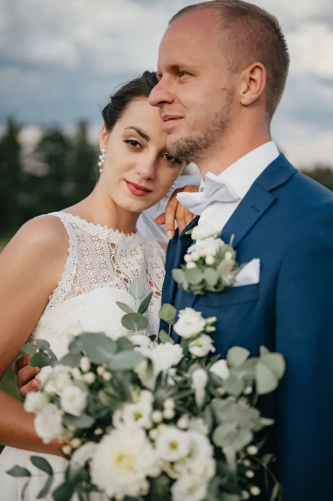
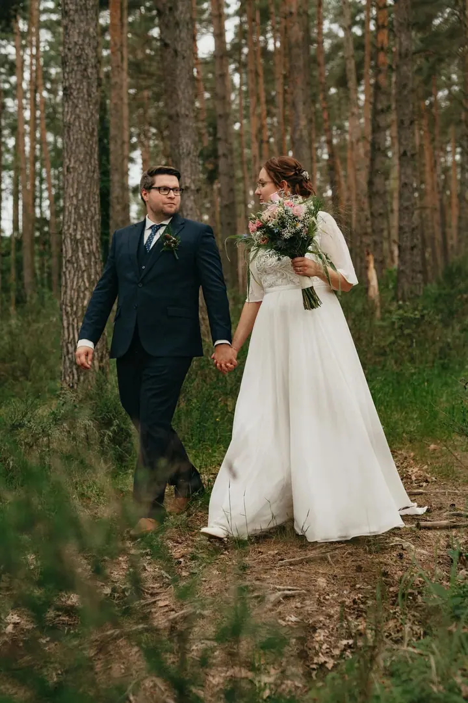
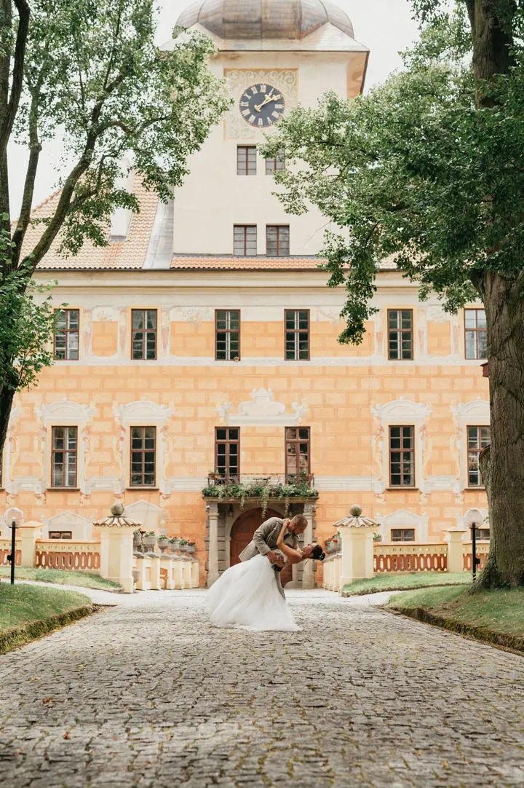
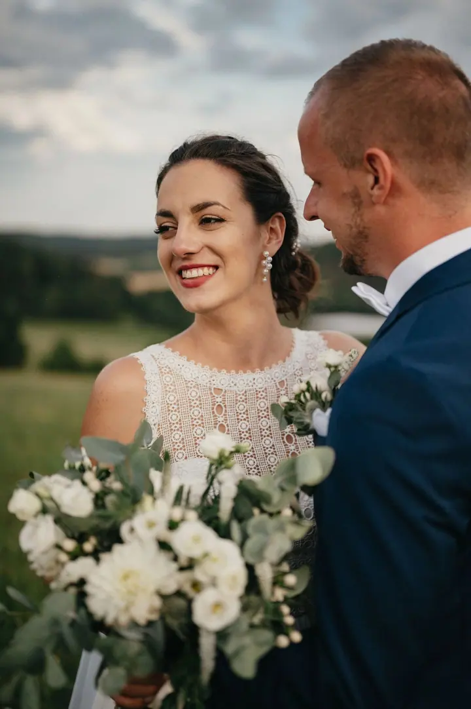

jedna
Svatební focení
Od předsvatební schůzky přes přípravy nevěsty a obřad až po párové focení a party. Vybrat si můžete balíček na pět hodin, na celý den, s fotobudkou nebo i s kameramanem.

Svatební a event fotograf · Šumava, Jihočeský kraj, Plzeňský kraj

Jmenuji se Ondřej Sellner a fotím svatby, maturitní plesy i firemní akce, hlavně na Šumavě a v jižních Čechách. Rád jsem u celého dne od příprav po párové focení a na party často přivezu i fotobudku.
Více o mně
Co fotím
jedna
Od předsvatební schůzky přes přípravy nevěsty a obřad až po párové focení a party. Vybrat si můžete balíček na pět hodin, na celý den, s fotobudkou nebo i s kameramanem.
dvě
Fotím maturitní plesy, firemní akce a další události. Na svatbu nebo firemní večírek přivezu fotobudku s tiskem fotek na místě.
tři
Focení v přírodě nebo v ateliéru na 30 nebo 60 minut. Fotky k úpravě si vyberete sami a do 14 dnů je dostanete v tiskové kvalitě.
Produkty na bílém pozadí, stylizované fotky v přírodě nebo na modelce i náročné focení skla, vín a prémiového alkoholu. Fotíme na švýcarském fotostole se světly Photon Europe.
Od ranních příprav až po poslední tanec

Za objektivem
Jsem svatební a event fotograf s praxí. Spolupráci vždycky začínám předsvatební schůzkou, osobně nebo přes videohovor, abychom se poznali ještě před velkým dnem. Na den svatby pak můžu být s vámi od ranních příprav nevěsty až po večerní party.
Kromě svateb fotím maturitní plesy, firemní akce, párová focení a produkty. Produktové fotky děláme na švýcarském fotostole se světly Photon Europe, takže si poradím i se sklem, víny nebo lesklými materiály.
Fotky pečlivě vybírám a upravuji tak, aby barvy držely celý příběh dne pohromadě. Všechno dostanete ve vysokém rozlišení pro tisk i v menším pro sdílení s rodinou a upravené fotky si u sebe na disku nechávám zálohované navždy.
Ondřej
Seznámíme se osobně nebo přes videohovor a projdeme spolu plán dne, místa a vaše přání.
Podle balíčku jsem u příprav nevěsty, obřadu, společného focení, svatebních her i party.
Na konci dne si vás vezmu stranou a v klidu nafotíme jen vás dva.
Do 8 týdnů dostanete upravené fotky v online galerii, ve vysokém rozlišení pro tisk i v menším pro sdílení.
Portfolio
Otázky
Všechny fotky jsou hotové do 8 týdnů. Když spěcháte, nabízím přednostní odevzdání celé svatby do jednoho týdne za příplatek 10 000 Kč.
Po celé Šumavě jezdím zdarma. Po Jihočeském, Plzeňském a jihovýchodní části Středočeského kraje je doprava zdarma při objednávce nad 7 000 Kč, po celé střední Evropě nad 35 000 Kč.
Fotobudka je vám k dispozici po celou dobu, kdy to technicky jde, a fotky rovnou tiskne. V balíčku s fotobudkou máte 300 výtisků, což obvykle s rezervou stačí pro hosty i do svatební knihy.
Ano, předsvatební focení na 1 až 1,5 hodiny stojí 2 500 Kč. Na svatbu vám navíc zdarma zapůjčím Instax s filmy.